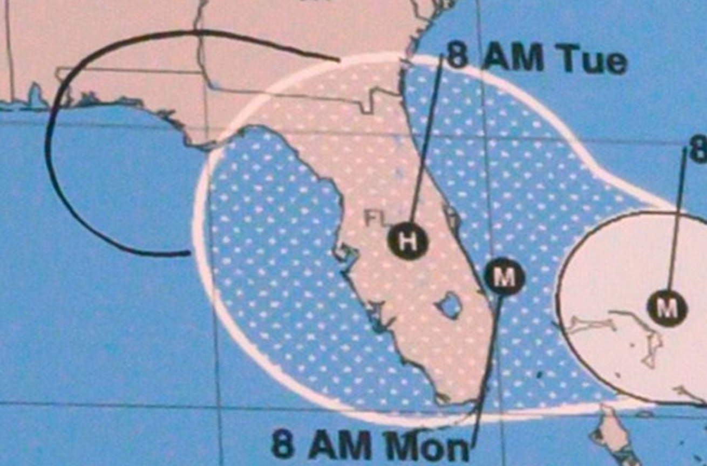
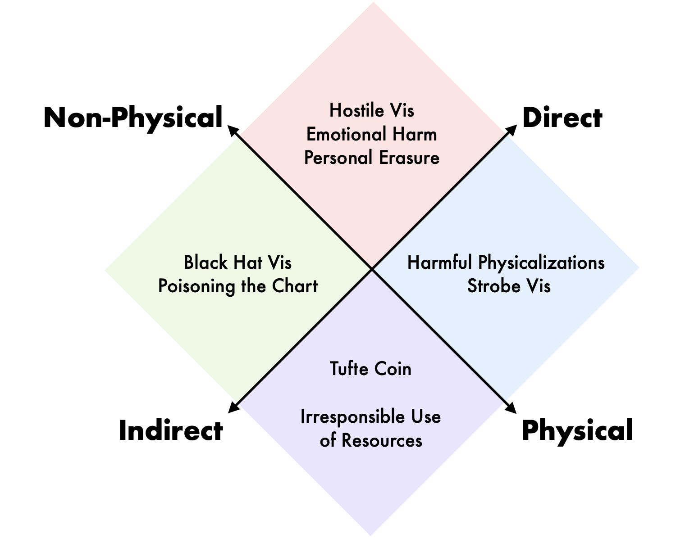
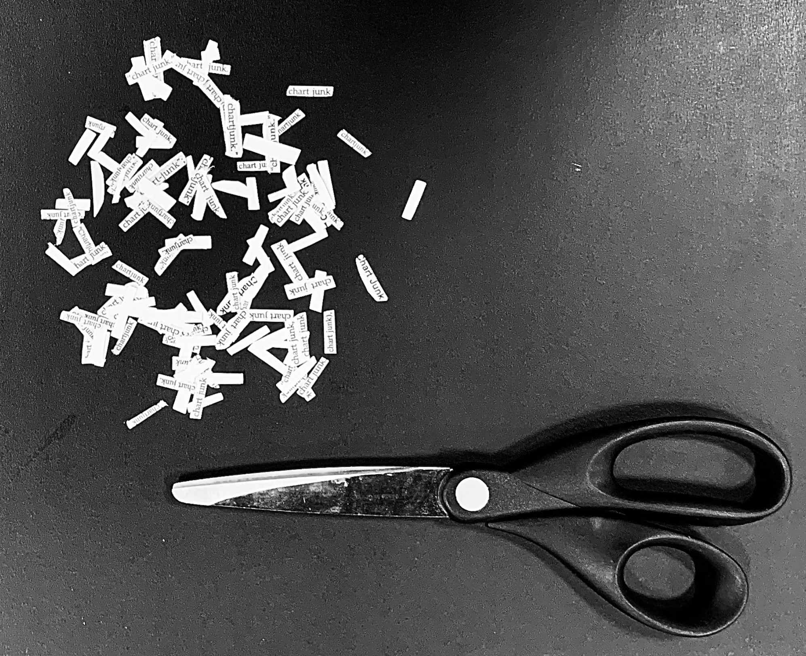
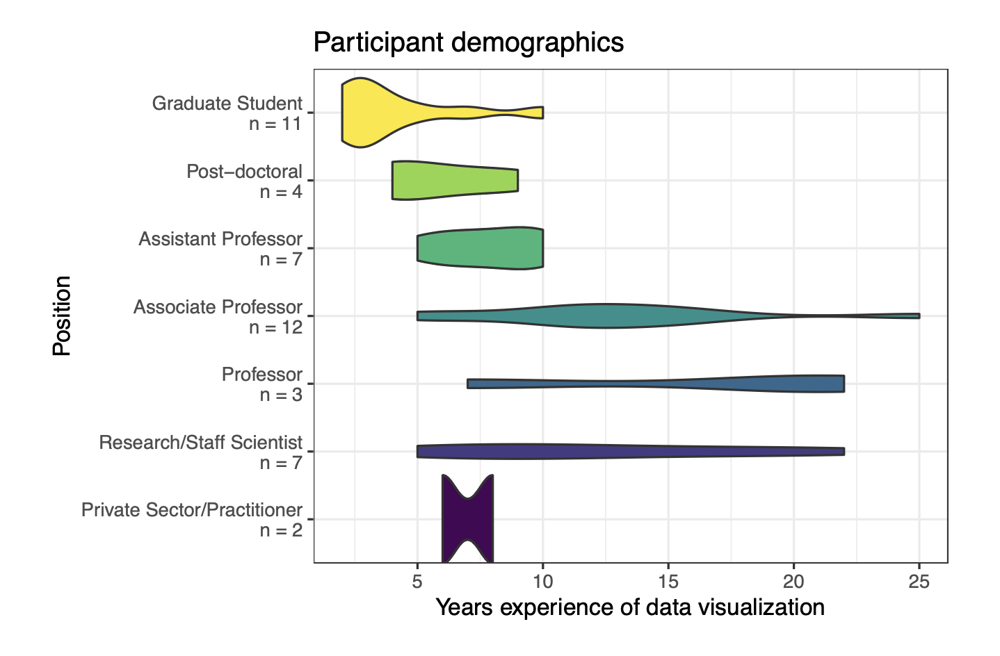
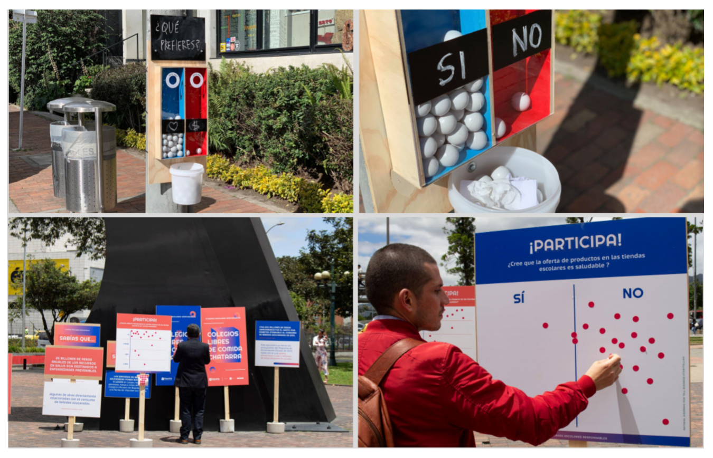
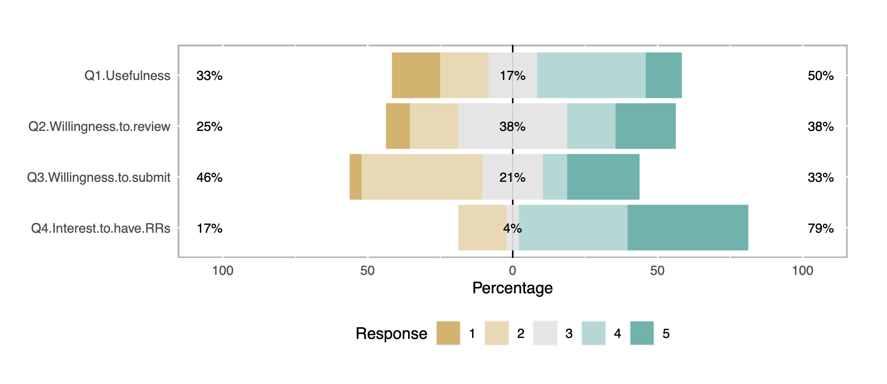
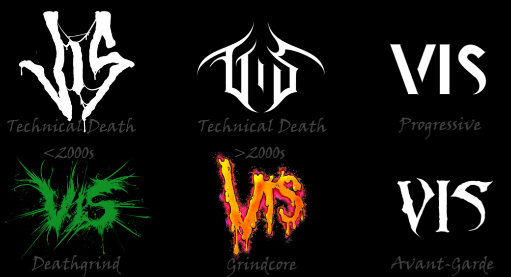
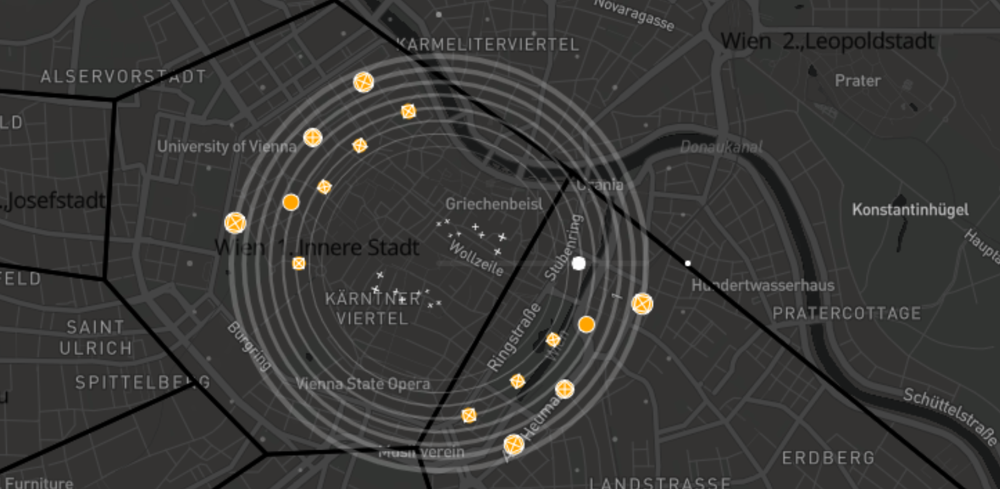
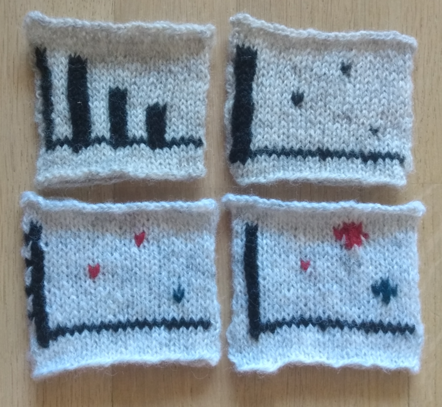

alt.
VIS
A half-day workshop at IEEE VIS 2021
on Sunday, October 24th from 12:00-3:30pm CDT (UTC-5)
Follow us on Twitter! 
Not all work that moves the field forward fits into the model of a standard conference paper or conference talk. The memorability or intellectual impact of work is often inextricably linked to this non-conventional form, whether it is a reflection, provocation, critique, satire, artistic statement, or manifesto. Successful venues like ACM CHI’s alt.chi (“a forum for controversial, risk-taking, and boundary pushing research at CHI”) and various “unconferences” have emerged in the past years as a way of providing an outlet for this sort of unconventional work.
Visualization, and IEEE VIS specifically, which incorporates perspectives in the intersection between art and design, statistics and psychology, we believe is uniquely placed to both generate and value the non-traditional. What’s more, we have observed a long-running desire for an outlet for non-traditional work among both long-time attendees as well as those researchers or practitioners who do not currently feel welcome or appreciated in the IEEE VIS environment.
Therefore, based on the (often unexpected) utility of unconventional work, the long standing and successful models of “alternative” conferences, and an expressed interest in bringing these models to the IEEE VIS community, we propose an “alt.VIS” workshop as avenue for work that is otherwise difficult to place in the main conference venues for reasons of form, format, or topic.
The remit of this workshop, mirroring alt.CHI, will be relatively broad both in terms of scope of topics and presentation types: our selection criteria are more focused on impact. What sort of work might cause the field to rethink its priorities or ways of operating? What work might highlight under-explored or neglected areas of visualization study or application? What, as per Kant, would “interrupt [our] dogmatic slumber” and stir us to action?
Thank you!
Our inaugural alt.VIS workshop took place on Sunday, October 24th at IEEE VIS Virtual. Our deepest gratitude to all the authors, reviewers, and attendees for making this workshop a wonderful, intellectually provocative experience. You can view the full streamed session below:
We also live-tweeted the event via @altVISworkshop. If you are interested in joining the organizing committee or submitting ideas for future workshops, please contact us at alt.vis.workshop@gmail.com.
Accepted Papers
We invited the submission of bold, provocative, unusual, unconventional, thought-provoking works related to visualization in the broad sense. All accepted submissions have been certified "sufficiently weird".
Examples of submissions types in our call for proposals included (but were not limited to):
- Provocations, manifestos, or other critiques of visualization research and practice
- Creative and thought-provoking presentations of data (especially unconventional data), either as traditional visualizations or as multimedia presentations or artworks
- Novel and unconventional visualization techniques or design processes
Submissions were evaluated on clarity, novelty, and their ability to promote productive thought and discussion for the alt.VIS audience. Given our focus on work that does not yet have a home in the main conference, we were unlikely to accept work that could conceivably be accepted to a main conference track.
|  | Towards a Theory of Bullshit VisualizationMichael CorrellAbstract: In this unhinged rant, I lay out my suspicion that a lot of visualizations are bullshit: charts that do not have even the common decency to intentionally lie but are totally unconcerned about the state of the world or any practical utility. I suspect that bullshit charts take up a large fraction of the time and attention of actual visualization producers and consumers, and yet are seemingly absent from academic research into visualization design. PDFArXiv |
|  | Visualization for VillainyAndrew M McNutt, Lilian Huang, Kathryn KoenigAbstract: Visualization has long been seen as a dependable and trustworthy tool for carrying out analysis and communication tasks---a view reinforced by the growing interest in applying it to socially positive ends. However, despite the benign light in which visualization is usually perceived, it carries the potential to do harm to people, places, concepts, and things. In this paper, we capitalize on this negative potential to serve an underrepresented (but technologically engaged) group: villains. To achieve these ends, we introduce a design space for this type of graphical violence, which allows us to unify prior work on deceptive visualization with novel data-driven dastardly deeds, such as emotional spear phishing and unsafe data physicalization. By charting this vile charting landscape, we open new doors to collaboration with terrifying domain experts, and hopefully, make the world just a bit worse. PDFArXiv |
|  | Manifesto for Putting Chartjunk in the Trash 2021!Derya Akbaba, Jack Wilburn, Miriah MeyerAbstract: In this provocation we ask the visualization research community to join us in removing chartjunk from our research lexicon. We present an etymology of chartjunk, framing its provocative origins as misaligned, and harmful, to the ways the term is currently used by visualization researchers. We call on the community to dissolve chartjunk from the ways we talk about, write about, and think about the graphical devices we design and study. As a step towards this goal we contribute a performance of maintenance through a trio of acts: editing the Wikipedia page on chartjunk, cutting out chartjunk from IEEE papers, and scanning and posting a repository of the pages with chartjunk removed to invite the community to re-imagine how we describe visualizations. This contribution blurs the boundaries between research, activism, and maintenance art, and is intended to inspire the community to join us in taking out the trash. PDF |
|  | 'Is IEEE VIS *that* good?'' On key factors in the initial assessment of manuscript and venue qualityNicholas S Spyrison, Benjamin Lee, Lonni BesançonAbstract: Background: Academic performance is at the heart of hiring decisions and funding applications. A commonly used performance metric is the prestige of venues which a researcher publishes scholarly articles in. This may influence researchers’ individual perceptions of different venues, and subsequently cause them to discriminate research articles merely based on publication venue. Objectives: We want to understand if this focus on prestige affects how visualization researchers behave when reading and citing articles in their own work, or if it is the case in administrative processes only (e.g., hiring, grants). We also want to understand how visualization researchers determine the prestige of any given venue. Method: We ran an online survey open for 10 days that we sent out to visualization researchers. Results: We gathered 46 responses through a sample of convenience. Unsurprisingly, publication venue plays the biggest part in how visualization researchers determine if they should read a given research article. Interestingly, when forming their opinion on said publication venues, rating systems and metrics are among the least important measures for quality. Conclusion: We highlight the potential risks around focusing on venue when assessing research articles. We further underline the necessity to discuss with the community on strategies to switch the focus to robustness and reliability to foster better practices and less stressful publishing expectations. Reproducibility: Data, materials and preregistration available on osf.io/ch6p4/ PDFOSF |
|  | Visualizations as Data InputSamuel Huron, Wesley WillettAbstract: We examine "input visualizations", visual representations that are designed to collect (and represent) new data rather than encode pre-existing datasets. Information visualization is commonly used to reveal insights and stories within existing data. As a result, most contemporary visualization approaches assume existing datasets or data structures as the starting point for design, through which that data will be mapped to visual encodings to produce final visualizations. Meanwhile, the implications of visualizations as inputs and as data sources have received extremely little attention—despite the existence of visual and physical examples stretching back centuries—and the benefits, trades-offs, design patterns, and even the language necessary to describe them remain unexplored. In this paper we argue for the deeper examination of input visualizations, highlighting a set of recent examples and introducing vocabulary for characterizing them. Finally, we present a series of provocations which examine some of the challenges posed by input visualizations and suggest opportunities for better understanding this type of visual representations and their potential. PDF |
|  | Publishing Visualization Studies as Registered Reports: Expected Benefits and Researchers’ AttitudesLonni Besançon, Anastasia Bezerianos, Pierre Dragicevic, Petra Isenberg, Yvonne JansenAbstract: Background: Registered Reports are publications in which study proposals are peer reviewed and pre-accepted before the study is ran. Their adoption in other disciplines has been found to promote research quality and save time and resources. Objectives: We offer a brief introduction to Registered Reports and their expected benefits for visualization research. We then report a survey of the visualization community on their attitudes towards Registered Reports. This survey takes the form of a quasi Registered Report, the first one presented at a visualization venue as far as we know. Method: We will run an online survey that will be open from the end of August until the day of the alt.VIS workshop. Results: Not available yet. Conclusion: Not available yet. Reproducibility: All the material is available on osf.io/4nrma/. PDFOSF |
|  | Illegible Semantics: Exploring the Design Space of Metal LogosGerrit Rijken, Rene Cutura, Frank Heyen, Michael Sedlmair, Michael Correll, Jason Dykes, Noeska Natasja SmitAbstract: The logos of metal bands can be by turns gaudy, uncouth, or nearly illegible. Yet, these logos work: they communicate sophisticated notions of genre and emotional affect. In this paper we use the design considerations of metal logos to explore the space of "illegible semantics'': the ways that text can communicate information at the cost of readability, which is not always the most important objective. In this work, drawing on formative visualization theory, professional design expertise, and empirical assessments of a corpus of metal band logos, we describe a design space of metal logos and present a tool through which logo characteristics can be explored through visualization. We investigate ways in which logo designers imbue their text with meaning and consider opportunities and implications for visualization more widely. PDFWebsite ArXiv |
 | Touching Art - A Method for Visualizing Tactile ExperienceBernice Rogowitz, Laura J Perovich, Yuke Li, Bjorn G Kierulf, Dietmar OffenhuberAbstract: It is human to want to touch artworks, to feel their surface curvature and texture, their shapes and structures, and to feel the hand of the artist. Museum guards need to be constantly vigilant to protect art objects from adoring and exploring touches by visitors. This paper introduces a novel technique for capturing where and how art objects are touched. In this method, the users' touch either adds, or subtracts, microscopic fluorescent particles from a three-dimensional art object. Viewing the object under ultraviolet light reveals their touch traces and gestures. We present human touch behavior for a three-dimensional stylized landscape, and for two abstract and two representational art objects. We also present the results of video recordings of real-time behavior and user interviews. The resulting data show the kinds of touches, and where they are directed, and also reveal important individual differences. We feel this method opens the door to studying art perception through touch, and also enables new kinds of studies into touch behavior in other applications, including visualization, embodied cognition, and design. PDF |
|  | Xenakis: Data Cities and SoundVictor Schetinger, Velitchko Andreev Filipov, Renan L Martins Guarese, Ignacio Pérez-MessinaAbstract: In this work, we report on the results and lessons learned from different disciplines while researching the loosely-defined problem of hearing a city. We present Xenakis, a tool for the musification of urban data, which is able to capture some features of a city's topology through the distribution of street orientations, and turn it into a (very) small piece of music, a loop, which can be used as building block for compositions. Besides providing complementary visual and auditory channels to interface with this data, we also allow the piping of midi signals to other applications. This concept was developed by visualization researchers collaborating with musicians using design study methodologies in an open-ended way. Our results include musical tracks, and we take advantage of the scope of alt.VIS to communicate our research in a sincere, humorous, and engaging format. PDFMiro Board ArXiv |
|  | Data Knitualization: An Exploration of Knitting as a Visualization MediumNoeska Natasja SmitAbstract: While data visualization can be achieved in many media, from hand-drawn on paper to 3D printed via data physicalization, the ancient craft of knitting is not often considered as a visualization medium. With this work, I explore hand knitting as a potential data visualization medium based on my personal experience as a knitter and visualization researcher. PDFOSF |
Organizers

Jane Adams
Northeastern University
@JaneLydiaAdams
universalities.com
Lonni Besançon
Monash University
@lonnibesancon
lonnibesancon.me

Michael Correll
Tableau Research
correll.io
R. Jordan Crouser
Smith College
@jordancrouser
jcrouser.github.io
Charles Perin
University of Victoria
@charles_perin
charlesperin.net

Paul Rosen
University of South Florida
@paulrosenphd
cspaul.com
Questions? Contact us at alt.vis.workshop@gmail.com.